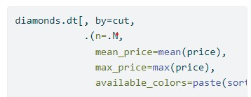
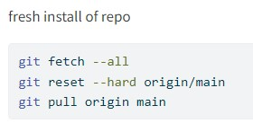
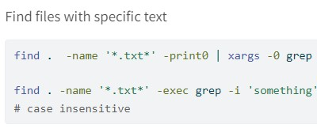
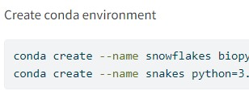
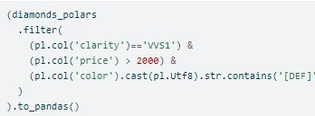
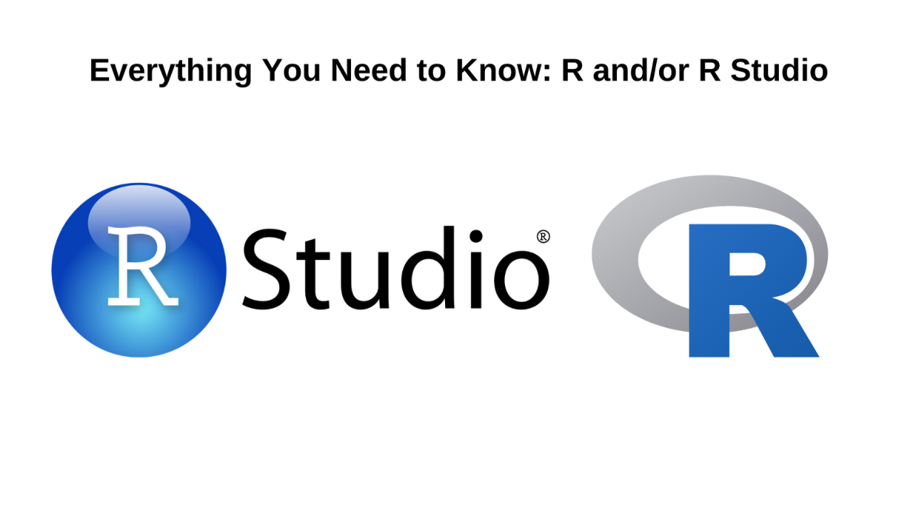
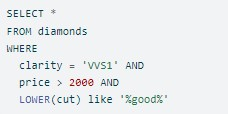
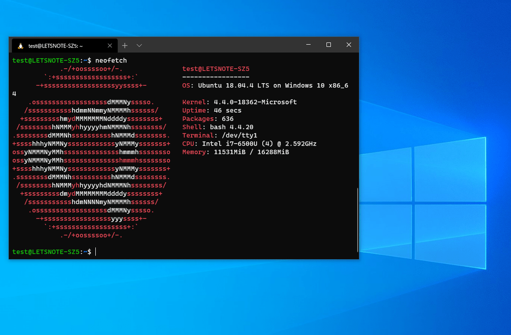

Command reference for the datatable package
datatable

Commonly used git commands

Useful Linux terminal commands

Typical terminal commands for Miniconda 3
Code recipes for modelling in R

Command reference for the polars Python package, with R equivalents
polars
Basic Quarto syntax

Notes on how to install R and RStudio, specific to each platform.

A listing of some useful SQL commands

Useful WSL2 commands
How to perform webscraping in R, using the rvest package
rvest